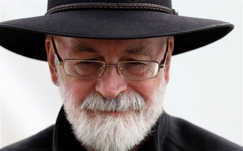
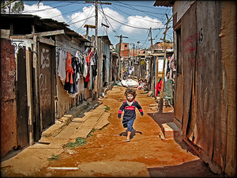
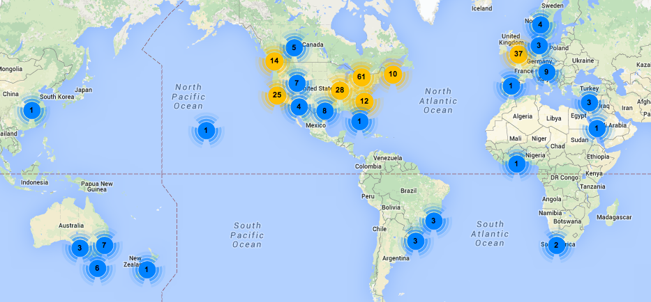

Software Carpentry:
Lessons Learned
January 2015

Our Mission
To make researchers more productive
by teaching them basic lab skills for scientific computing.
|
|
Because life's too short to not save the world.
|
Credo
|  |
|
If you build a man a fire,
you'll keep him warm for a night.
If you set a man on fire,
you'll keep him warm for the rest of his life.
— Terry Pratchett
|
Not an Overnight Success

Los Alamos National Laboratory, July 1998
If you were born then, you can drive now.
Our Results
-
20% improvement in productivity is common
-
10X isn't rare
-
Do the old things faster
-
Tackle new problems
-
Ready for HPC, the cloud, big data, ...
-
Start doing open science
Why We Exist
|
|
 |
| HPC, the cloud, big data |
|
the other 92% |
What We Teach
| the Unix shell |
⇒ |
automate repetitive tasks |
| Git |
⇒ |
track and share work |
| Python or R |
⇒ |
build modular code |
| SQL |
⇒ |
manage data |
Advertise the tool, teach the thinking
How We're Doing

2010-2014: 265 workshops for 9000 people
Lesson #1
Most researchers think programming is
a tax they have to pay to do science.
"If I wanted to be a computer scientist,
I would have picked a different major in undergrad."
Lesson #2
They don't care about reproducibility.
- Five million papers published 1990–2000.
- 100 retracted for computational reasons.
- So odds of retraction = 1 in 50,000.
- Average paper takes eight months to produce.
- Reproducibility worth 115 seconds per paper.
Lesson #3
They care a lot about productivity.
- And about being able to tackle new problems.
- And about their careers.
Lesson #4
The curriculum is full.
- "What do I drop to make room for more computing: quantum or thermo?"
- 5 minutes per lecture ⇒ 4 courses in a degree
- Have to fit in around the curriculum until we achieve critical mass
What Winning Looks Like
| # Reviewers |
% Papers |
| 2 |
10% |
| 3 |
40% |
| 4 |
40% |
| 5 |
10% |
| P(at least one reviewer is a believer) |
50% |
| P(single reviewer is a believer) |
18.3% |
We only have to change the mind of 1 scientist in 5
Lesson #5
It's all in the details.
| Two days |
Charge a fee |
| Live coding |
Sticky notes |
| Group signup |
Peer instructors |
Lesson #6
Incentives, incentives, incentives.
| Save the world |
Make new friends |
| Self-defense |
Teach to learn |
Boost their careers
Lesson #7
There's a lot we don't know.
- How to measure programmers' productivity?
- How to measure scientists' productivity?
- The unknowns don't cancel out
Our biggest failing is lack of systematic assessment
Lesson #8
There's a lot we do know.
Lesson #9
Most people would rather fail than change.
Most scientists treat research on teaching and programming
like most politicians treat research on climate change.
Lesson #10
Open isn't just for science.
- Our lessons have had over 150 contributors
- We can write them the way we write software and encyclopedias
Open collaboration is the real revolution.
Software Carpentry Foundation
Thank you for listening